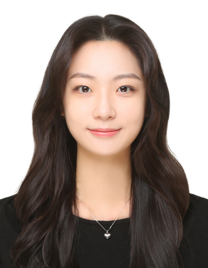

Sookmyung Women’s University, Seoul, Republic of Korea
M.S. in Computer Science · Mar. 2025 – Feb. 2027 (expected)
B.S. in Statistics & Business Administration · Mar. 2020 – Feb. 2025

I am an M.S. student in Computer Science at Sookmyung Women’s University and a Research Assistant in the Data Intelligence Laboratory, advised by Prof. Ki Yong Lee.
My research focuses on structured and controllable generative modeling, particularly diffusion models that generate structured outputs such as scene graphs and human/robot poses from language.

A discrete diffusion framework for generating time-ordered scene graph sequences directly from natural-language descriptions of human–object interactions.

A text-conditioned diffusion model for generating static Unitree G1 poses under joint-range and self-collision constraints, using human-motion retargeting in MuJoCo.

A text-to-pose diffusion model that represents body segments by directional angles rather than joint coordinates, preserving consistent skeletal proportions.
Text-Conditioned Scene Graph Sequence Generation via Discrete Diffusion
35th ACM International Conference on Information and Knowledge Management (CIKM ’26), Short Paper — Accepted
Text-driven 2D Human Pose Generation via Diffusion in Directional Angle Space
The Transactions of the Korea Information Processing Society, 15(7), 610–619
Text-Conditioned Diffusion for Static Humanoid Robot Pose Generation with Joint-Limit Embedding and Self-Collision Guidance
Submitted to KICS 2026